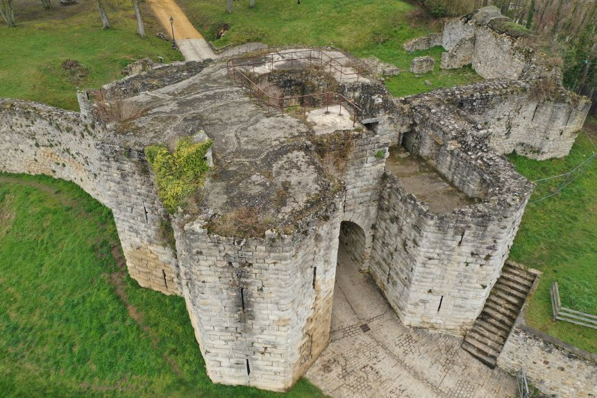
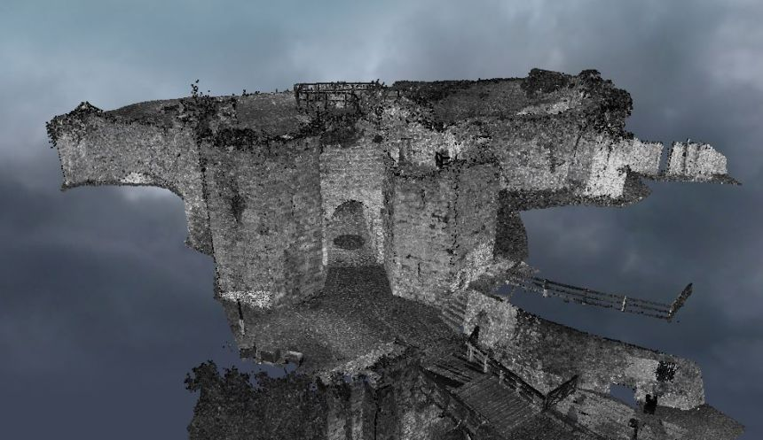

Ce site présente le travail réalisé dans le cadre de la modélisation en 3 dimensions (3D) de la porte Saint-Jean du château médiéval de Château-Thierry. La commune est située dans le département de l’Aisne, en région Hauts-de-France. Ce produit a été demandé par l’archéologue de la ville afin de procéder à des mesures précises de la structure et préparer une rénovation de la porte.
Le projet a été mené en deux temps, le premier a consisté en une semaine d’acquisition avec plusieurs équipes du parcours imagerie de la licence professionnelle MPGE puis du parcours PPMD de l'ENSG, tandis que le second a été consacré aux traitements et à la diffusion des produits par notre équipe.
Carte des points matérialisés
Légende des Clous:
- 1000 : En extérieur
- 2000 : En intérieur
- 3000 : Sur le toit
Video de présentation
Vidéo montrant les environs du chateau
Visualisation des nuages de points
Offset des coordonnées: X = 1729000 et Y = 8205000.
Ouvrir la visualisation Potree dans une nouvelle fenêtre Vue générale du site : visualisation Potree